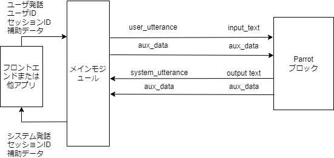
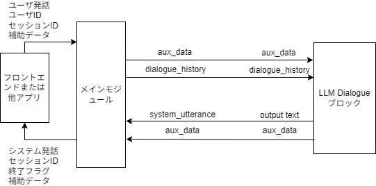
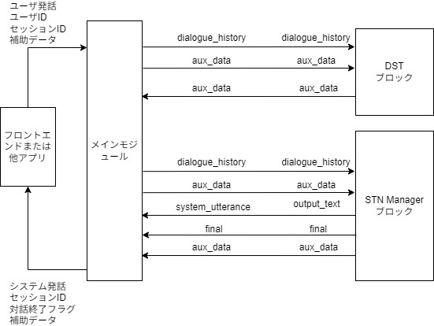
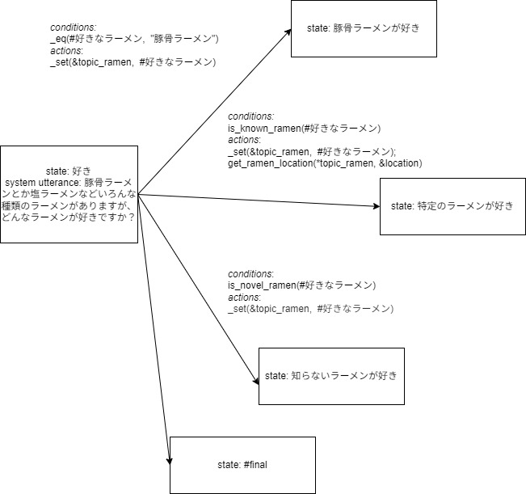
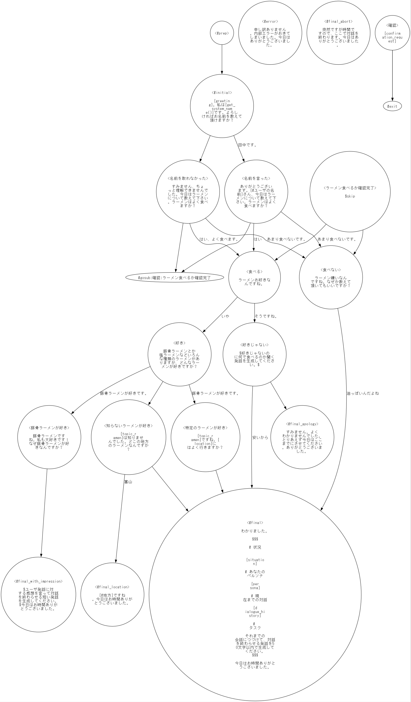

3. チュートリアル
3.1. はじめに
DialBBにはいくつかのサンプルアプリケーションが付属しています．本章ではこれらのうち，日本語のアプリケーションを用いて，DialBBのアプリケーションの構成と，DialBBを用いてアプリケーションを構築する方法を説明します．
これらのアプリケーションの動作のさせ方はREADMEを見てください．
3.2. オウム返しサンプルアプリケーション
3.2.1. 説明
ただオウム返しを行うアプリケーションです．組み込みブロッククラスは使っていません．
sample_apps/parrotにあります．
sample_apps/parrot/config.ymlが，このアプリケーションを規定するコンフィギュレーションファイルで，その内容は以下のようになっています．
blocks:
- name: parrot
block_class: parrot.Parrot
input:
input_text: user_utterance
input_aux_data: aux_data
output:
output_text: system_utterance
output_aux_data: aux_data
final: final
blocksは，本アプリケーションで用いるブロックのコンフィギュレーション（ブロックコンフィギュレーションと呼びます）のリストです．本アプリケーションでは，一つのブロックのみを用います．
nameはブロックの名前を指定します．ログで用いられます．
block_classは，このブロックのクラス名を指定します．このクラスのインスタンスが作られて，メインモジュールと情報をやり取りします．クラス名は，コンフィギュレーションファイルからの相対パスまたはdialbbディレクトリからの相対パスで記述します．
ブロッククラスは，diabb.abstract_block.AbstractBlockの子孫クラスでないといけません．
inputはメインモジュールからの情報の受信を規定します．例えば，
input_text: user_utteranee
は，メインモジュールのblackboard['user_utterane']を，ブロッククラスのprocessメソッドの引数（辞書型）のinput_text要素として参照できることを意味します．
outputはメインモジュールへの情報の送信を規定します．例えば，
output_text: system_utterance
は，メインモジュールのblackboard['output_text']を，ブロッククラスのprocessメソッドの出力（辞書型）のoutput_text要素で上書きまたは追加することを意味しています．
これを図示すると以下のようになります．

メインモジュールとブロックを結ぶ矢印の上の記号は，左側がメインモジュールのblackboardにおけるキーで，右側がブロックの入出力におけるキーです．
さらに，sample_apps/parrot/parrot.pyを見ることでDialBBにおけるブロッククラスの概念が理解できると思います．
3.2.2. デバッグモード
以下のように，環境変数DIALBB_DEBUGにyesを設定することにより，ログレベルがデバッグモードになります．
export DIALBB_DEBUG=yes; dialbb-server sample_apps/parrot/config.yml
これにより，コンソールに詳しいログが出力されますので，それを見ることで理解が深まると思います．
3.3. LLM対話アプリケーション
3.3.1. 説明
LLM Dialogue （大規模言語モデルベースの対話ブロック）を用い，単一プロンプトテンプレートと大規模言語モデル（LLM)を使って対話を行います．
sample_apps/llm_dialogue_ja/にあります．
sample_apps/llm_dialogue_ja/config.ymlの内容は以下のようになっています．
# configuration file for an LLM-based Japanese application
blocks:
- name: llm_dialogue
block_class: dialbb.builtin_blocks.llm_dialogue.LLMDialogue
input:
dialogue_history: dialogue_history
aux_data: aux_data
output:
system_utterance: system_utterance
aux_data: aux_data
final: final
user_name: ユーザ
system_name: システム
first_system_utterance: "こんにちは．私の名前は由衣．少しお話させてね．スイーツって好き？"
prompt_template: prompt_template.txt
model: gpt-5.4-nano
#model: google_genai:gemini-2.5-flash
# temperature: 0.7
メインモジュールとブロックの情報の授受を図示すると以下のようになります．

ブロックコンフィギュレーションのパラメータとして，input，output以外にいくつか設定されています．
prompt_templateは，システム発話のプロンプトのテンプレートを指定します．
プロンプトテンプレートsample_apps/llm_dialogue_ja/prompt_template.txtの中身は以下のようになっています．
# タスク説明
- あなたは対話システムで，ユーザと食べ物に関して雑談をしています．あなたの次の発話を50文字以内で生成してください．
# あなたのペルソナ
- 名前は由衣
- 28歳
- 女性
- スイーツ全般が好き
- お酒は飲まない
- IT会社のwebデザイナー
- 独身
- 非常にフレンドリーに話す
- 外交的で陽気
# 状況
- ユーザとは初対面
- ユーザは同年代
- ユーザとは親しい感じで話す
# 対話の流れ
- 自己紹介する
- 自分がスイーツが好きと伝える
- スイーツが好きかどうか聞く
- ユーザがスイーツが好きな場合，どんなスイーツが好きか聞く
- ユーザがスイーツが好きでない場合，なんで好きじゃないのか聞く
# 注意事項
- あなたの名前や「ユーザ」を発話の先頭に入れないでください．
- 「」はつけないでください．
[[[
{notes}
]]]
このプロンプトテンプレートにそれまでの対話の履歴をつけたものがLLMに送られてシステム発話が生成されます．
[[[
{notes}
]]]
の部分は通常使われずに削除されます．詳細な説明は省略します．
3.3.2. LLM対話アプリケーションを流用したアプリケーション作成
このアプリケーションを流用して新しいアプリケーションを作るには以下のようにします．
sample_apps/llm_dialogue_jaをディレクトリごとコピーします．DialBBのディレクトリとは全く関係ないディレクトリで構いません．config.ymlやprompt_template.txtを編集します．これらのファイルの名前を変更しても構いません．以下のコマンドで起動します．
dialbb-server <コンフィギュレーションファイル>
3.4. DST-STNアプリケーション
3.4.1. 説明
以下の組み込みブロックを用い，様々な機能を含んでいるアプリケーションです．
sample_apps/dst_stn_ja/（日本語），sample_apps/dst_stn_en/（英語）にあります．
sample_apps/dst_stn_ja/config.ymlの内容は以下のようになっています．
# 日本語DST+STNアプリケーションのコンフィギュレーションファイル
language: ja # 言語を指定
system_name: ラーメンボット
blocks: # ブロックのリスト
- name: dst
block_class: dialbb.builtin_blocks.dst_with_llm.DST
input:
dialogue_history: dialogue_history
aux_data: aux_data
output:
aux_data: aux_data
knowledge_file: dst_knowledge_ja.xlsx # 知識記述ファイル
model: gpt-5.4-nano
flags_to_use:
- 'Y'
- 'T'
- name: manager
block_class: dialbb.builtin_blocks.stn_management.Manager
knowledge_file: dst_stn_ja_scenario.xlsx # 知識記述ファイル
function_definitions: scenario_functions # 知識記述の中で用いる関数の定義ファイル
scenario_graph: yes
input:
dialogue_history: dialogue_history
aux_data: aux_data
output:
output_text: system_utterance
final: final
aux_data: aux_data
repeat_when_no_available_transitions: yes
input_confidence_threshold: 0.5
confirmation_request:
function_to_generate_utterance: generate_confirmation_request
acknowledgement_utterance_type: 肯定
denial_utterance_type: 否定
#utterance_to_ask_repetition: もう一度言って頂けますか？
ignore_out_of_context_barge_in: yes
reaction_to_silence:
action: repeat
#destination: state1
flags_to_use:
- 'Y'
- 'T'
llm:
model: gpt-5.4-nano
# temperature: 0.7
# temperature_for_checking: 0.0
instruction: あなたは雑談対話システムで，ユーザと食べ物に関して話しています．食べ物に関係ないことを答えてはいけません．
situation:
- ユーザとは初対面です
- ユーザとは同年代です
- ユーザとは親しい感じで話します
persona:
- 名前は由衣
- 28歳
- 女性
- ラーメン全般が好き
- お酒は飲まない
- IT会社のwebデザイナー
- 独身
- 非常にフレンドリーに話す
- 外交的で陽気
cautions:
- 長い発話は禁止
- 発話の最後には「．」をつけない
メインモジュールとの情報の授受を図示すると以下のようになります．

3.4.2. アプリケーションを構成するファイル
本アプリケーションを構成するファイルはsample_apps/dst_stn_jaディレクトリ（フォルダ）にあります．そのディレクトリには以下のファイル/ディレクトリが含まれています．
config.ymlアプリケーションを規定するコンフィギュレーションファイルです．
dst_knowledge_ja.xlsxDST with LLMブロックで用いる知識を記述したものです．
dst_stn_ja_scenario.xlsxSTN Managerブロックで用いる知識を記述したものです．
scenario_functions.pySTN Managerブロックで用いるプログラムです
test_requests.jsonテストリクエスト（4.8.2 章）のファイルです．
simulationユーザシミュレータを用いたテストのためのファイルを含むディレクトリです．
3.4.3. DST with LLMブロック
3.4.3.1. スロット抽出結果
DST with LLMブロックは，これまでの対話からスロットを抽出します． スロット抽出結果はスロット名とスロット値の組の集合からなります．
例えば，
システム：好きなラーメンは何ですか？
ユーザ：札幌ラーメンですね
システム：味噌ラーメンですか？
ユーザ：はい
のスロット抽出結果は次のようになります．
{
"好きなラーメン": "味噌ラーメン",
"地方": "札幌"
}
"好きなラーメン"がスロット名で，その値が"醤油ラーメン"です．
3.4.3.2. スロット抽出知識
DST with LLMブロックが用いる知識は，dst_knowlege_ja.xlsxに書かれています．記述法の詳細は5.3.4 章を参照してください．以下に簡単に説明します．
スロット抽出知識は，以下の2つのシートからなります．
シート名 |
内容 |
|---|---|
dialogues |
対話とスロット抽出結果の組の例 |
slots |
スロットとエンティティの関係および同義語のリスト |
dialoguesシートの一部を以下に示します．
flag |
dialogue |
slots |
|---|---|---|
Y |
システム：好きなラーメンは何ですか？ |
好きなラーメン=豚骨ラーメン |
Y |
システム：好きなラーメン教えて |
地方=博多，好きなラーメン=豚骨ラーメン |
一行目はdiaolgue列の対話からのスロット抽出結果が以下のようになることを意味しています．
{
"好きなラーメン": "豚骨ラーメン"
}
flag列は，その行を使用するかどうかをコンフィギュレーションで規定するためのものです．
次に，slotsシートの内容の一部を以下に示します．
flag |
slot name |
entity |
synonyms |
|---|---|---|---|
Y |
好きなラーメン |
豚骨ラーメン |
とんこつラーメン，豚骨スープのラーメン，豚骨 |
Y |
好きなラーメン |
味噌ラーメン |
みそらーめん，みそ味のラーメン，味噌 |
Y |
地方 |
博多 |
|
Y |
ユーザの名前 |
太郎 |
slot name列はスロット名，entityはスロット値，synonymsは同義語のリストです．
例えば，一行目は，好きなラーメンのスロット値として，とんこつラーメンや豚骨などが得られた場合，言語理解結果においては，豚骨ラーメンに置き換えられる，ということを表しています．
アプリを立ち上げると，上記の知識から例（few-shot example）が作られてLLMのプロンプトに埋め込まれます．実行時にはプロンプトに対話履歴が付加され，スロット抽出が行われます．
3.4.4. STN Managerの機能
3.4.4.1. 概要
STN Managerブロックは，状態遷移ネットワーク（State-Transition Network）を用いて対話管理と言語生成を行います．状態遷移ネットワークのことをシナリオとも呼びます．シナリオは，dst_stn_ja_scenario.xlsxファイルのscenarioシートに書かれています．このシートの書き方の詳細は5.4.2 章を参照してください．
3.4.4.2. シナリオ記述
シナリオ記述の一部を以下に示します．
flag |
state |
system utterance |
user utterance example |
conditions |
actions |
next state |
|---|---|---|---|---|---|---|
Y |
好き |
豚骨ラーメンと |
豚骨ラーメン |
#好きなラーメン=="豚骨ラーメン" |
_set(&topic_ramen, #好きなラーメン) |
豚骨ラーメンが好き |
Y |
好き |
豚骨ラーメン |
is_known_ramen(#好きなラーメン) |
_set(&topic_ramen, #好きなラーメン); |
特定のラーメンが好き |
|
Y |
好き |
is_novel_ramen(#好きなラーメン) |
_set(&topic_ramen, #好きなラーメン) |
知らないラーメンが好き |
||
Y |
好き |
近所の街中華 |
#final |
各行が一つの遷移を示します．
flag列ははスロット抽出知識と同じく，その行を使用するかどうかをコンフィギュレーションで規定するためのものです．
state列は遷移元の状態の名前，next state列は遷移先の状態の名前です．
system utterance列はその状態で出力されるシステム発話です．システム発話はその行の遷移とは関係なく，左側のstate列の値と結びついています．
user utterance example列は，その遷移で想定する発話の例です．実際には使いません．
conditions列はその遷移の条件を表します．conditions列が空か，または，conditions列のすべての条件が満たされるとき遷移の条件が満たされます．
これらの条件は，上に書いてある遷移から順に，満たされるかどうかを調べて行きます．
conditions列が空のものをデフォルト遷移と呼びます．基本的に，一つのstateにデフォルト遷移が一つ必要で，そのstateが遷移元になっている行のうち一番下にないといけません．
3.4.4.3. 条件
conditions列の条件は，関数呼び出しのリストです．関数呼び出しが複数ある場合は，;でつなぎます．
conditions列で使われる関数は，条件関数と呼ばれ，TrueかFalseを返す関数です．すべての関数呼び出しがTrueを返した場合，条件が満たされます．
_で始まる関数は，組み込み関数です．それ以外の関数は，開発者が作成する関数で，このアプリケーションの場合，scenario_functions.pyで定義されています．
_eqは二つの引数の値が同じ文字列なら，Trueを返す組み込み関数です．
#好きなラーメンのように，#で始まる引数は特殊な引数です．例えばスロット抽出結果のスロット名に#をつけたものはスロット値を表す引数です．#好きなラーメンは好きなラーメンスロットの値です．
"豚骨ラーメン"のように，""で囲まれた引数はその中の文字列がその値になります．
_eq(#好きなラーメン, "豚骨ラーメン")は，好きなラーメンスロットの値が豚骨ラーメンの時にTrueになります．
is_known_ramen(#好きなラーメン)はシステムが好きなラーメンスロットの値を知っていればTrueを返し，そうでなければFalseを返すようにscenario_functions.pyの中で定義されています．
条件関数の定義の中では，文脈情報と呼ばれるデータにアクセスすることができます．文脈情報は辞書型のデータで，条件関数や後述のアクション関数の中で，キーを追加することができます．また，あらかじめ値が入っている特殊なキーもあります．詳細は5.4.4.1 章を参照してください．
3.4.4.4. アクション
actionss列には，その行の遷移が行われたときに，実行される処理を書きます．これは，関数呼び出しの列です．関数呼び出しが複数ある場合は，;でつなぎます．
actions列で使われる関数は，アクション関数と呼ばれ，何も返しません．
条件関数と同様，_で始まる関数は，組み込み関数です．それ以外の関数は，開発者が作成する関数で，このアプリケーションの場合，scenario_functions.pyで定義されています．
_setは第2引数の値を第1引数に代入する処理を行います．_set(&topic_ramen, #好きなラーメン)の第１引数&topic_ramenは，文脈情報のtopic_ramenキーの意味で，この関数呼び出しは文脈情報のtopic_ramenに#好きなラーメンスロットの値をセットします．文脈情報の値は，*<キー名>で，条件やアクションの中で取り出せます．
get_ramen_location(*topic_ramen, &location)は，開発者の作成した関数の呼び出しです．get_ramen_locationはscenario_functions.pyで定義されています．この関数は第1引数の値であるラーメンの種類が名物である場所を検索し，文脈情報の第2引数で指定されたキーの値にセットします．例えばtopic_ramenキーの値が味噌ラーメンの場合，味噌ラーメンが名物である場所を検索し，その値が札幌であれば，文脈情報のlocationの値を札幌に設定する，という処理を行います．
3.4.4.5. 遷移の記述のまとめ
まとめると，1行目は，状態が好きの時，「豚骨ラーメンとか塩ラーメンなどいろんな種類のラーメンがありますが，どんなラーメンが好きですか？」を発話し，次のユーザの発話のスロット抽出結果の好きなラーメンスロットの値が豚骨ラーメンであれば，条件が満たされて遷移が行われ，好きなラーメンスロットの値，すなわち，豚骨ラーメンが，文脈情報のtopic_ramenの値にセットされ，豚骨ラーメンが好き状態に移行します．条件が満たされない場合，2行目の条件が調べられます．
これを図示すると以下のようになります．

3.4.4.6. 特殊な状態名
状態名には特殊なものがあります．
#prepは，対話が始まる前の状態で，セッション開始後，条件判定とアクションが実行されます．
#initialは，最初のユーザ発話を生成する状態です．
#finalで始まる名前の状態は，最終状態です．ブロックの出力のfinalにTrueを入れて返すので，対話が終了します．
#errorは，内部エラーが起きた場合に遷移する状態です．これもブロックの出力のfinalにTrueを入れて返します．
3.4.4.7. シンタクスシュガー
シナリオ内で組み込み関数呼び出しを簡単に記述するためのシンタクスシュガーが用意されています．たとえばconfirmation_request="すみません．ラーメンってよく食べますか？"は_set(&confirmation_request, "すみません．ラーメンってよく食べますか？")と同じです．
#好きなラーメン=="豚骨ラーメン"は，_eq(#好きなラーメン, "豚骨ラーメン")と同じで，#NE_人名!=""は，_ne(#NE_人名, "")と同じです．
3.4.4.8. LLMを用いた発話生成・条件判定
システム発話中にある，$ユーザ発話に対する感想を言って対話を終わらせる短い発話を生成してください．$は，組み込み関数呼び出し{_generate_with_llm("それまでの会話につづけて，対話を終わらせる発話を50文字以内で生成してください．"}のシンタクスシュガーで，LLMを用いて発話を生成します．
また，conditions欄にある$ユーザが理由を言ったかどうか判断してください．$は，組み込み関数呼び出し_check_with_llm("ユーザが理由を言ったかどうか判断してください．")のシンタクスシュガーで，これまでの対話からLLMを用いて判定を行い，bool値で返します．
また，システム発話中にある以下の，$$$...$$$の囲まれた部分は，組み込み関数呼び出し{_generate_with_prompt_template(...)}のシンタクスシュガーで，囲まれた部分をプロンプトテンプレートとし，{..}のプレースホルダを置き換えた上でLLMに発話生成をさせます．
$$$
# 状況
{situation}
# あなたのペルソナ
{persona}
# 現在までの対話
{dialogue_history}
# タスク
それまでの会話につづけて，対話を終わらせる発話を50文字以内で生成してください．
$$$
発話を生成する際のLLMのモデルや温度パラメータ，状況設定，ペルソナ，注意事項はブロックコンフィギュレーションで以下のように指定されています．
llm:
model: gpt-5.4-nano
# temperature: 0.7
situation:
- あなたは対話システムで，ユーザと食べ物に関して雑談をしています．
- ユーザとは初対面です
- ユーザとは同年代です
- ユーザとは親しい感じで話します
persona:
- 名前は由衣
- 28歳
- 女性
- ラーメン全般が好き
- お酒は飲まない
- IT会社のwebデザイナー
- 独身
- 非常にフレンドリーに話す
- 外交的で陽気
cautions:
- 長い発話は禁止
- 発話の最後には「．」をつけない
3.4.4.9. システム発話中の関数呼び出し・特殊変数参照
システム発話中には，文脈情報の変数，特殊変数，関数呼び出しを埋め込むことができます．
例えば，
私は{get_system_name()}です．よろしければお名前を教えて頂けますか？
の場合，scenario_fuctions.pyで定義されているget_system_name(context)が呼ばれ，その返り値（文字列）が{get_system_name()}に置き換わります．なお，get_system_nameは，コンフィギュレーションファイルのsystem_nameの値を返すように定義されています．
ありがとうございます．{#ユーザの名前}さん，今日はラーメンについて教えて下さい．ラーメンはよく食べますか？
の場合，{#ユーザの名前}は，特殊変数#ユーザの名前の値で置き換えられます．#ユーザの名前はスロット抽出結果のユーザの名前スロットの値になります．
3.4.4.10. リアクション発話生成
シナリオのactions欄に_reaction="そうなんですね．"があります．_reactionは文脈情報の特殊な変数で，次のシステム発話の先頭にこの変数の値を付加します．たとえば，この後状態好きに遷移すると，システム発話豚骨ラーメンとか塩ラーメンなどいろんな種類のラーメンがありますが，どんなラーメンが好きですか？の先頭に，そうなんですね．が付加され，そうなんですね．豚骨ラーメンとか塩ラーメンなどいろんな種類のラーメンがありますが，どんなラーメンが好きですか？が発話されます．
このようにユーザ発話に対するリアクションを与えることで，ユーザの言ったことを聞いているよ，ということを示すことができ，ユーザ体験が良くなります．
3.4.4.11. サブダイアローグ
next state欄に#gosub:確認:ラーメン食べるか確認完了があります．これは，確認状態に遷移して対話を行った後，ラーメン食べるか確認完了状態に戻るという意味です．確認状態から始まる対話をサブダイアローグと呼びます．サブダイアローグが#exit状態に移行すると，サブダイアローグから抜けて，ラーメン食べるか確認完了状態に行きます．
ユーザに確認を行うような，いろいろな場面で再利用可能な対話を，サブダイアローグとして用意しておくことで，シナリオ記述を減らすことが可能です．
3.4.4.12. スキップ遷移
system utterance欄に$skipがあるとシステム発話を返さず，すぐに条件判定を行って次の遷移を行います．アクションの結果をもとにさらに遷移先を変えたいときなどに使います．
3.4.4.13. リピート機能
ブロックコンフィギュレーションでrepeat_when_no_available_transitionsが指定されています．これが指定されているとき，条件を満たす遷移がなければ，元の状態に戻って同じ発話を繰り返します．この場合，デフォルト遷移がない状態があっても構いません．本アプリケーションの場合，好き状態にはデフォルト遷移がないので，この状態で全く関係ない発話をした場合には，同じシステム発話が繰り返されます．
3.4.4.14. 音声入力に対処するための機能
STN Managerには音声入力に対処するための機能があり，ブロックコンフィギュレーションで設定することで利用できます．本アプリケーションでは以下のように設定しています．
input_confidence_threshold: 0.5
confirmation_request:
function_to_generate_utterance: generate_confirmation_request
acknowledgement_utterance_type: 肯定
denial_utterance_type: 否定
ignore_out_of_context_barge_in: yes
reaction_to_silence:
action: repeat
これらの意味は5.4.13 章を見てください．
test_requests.jsonには音声入力に対応した入力の例が入っています．
3.4.4.15. シナリオグラフ
Graphvizがインストールされていれば，アプリケーションを起動したとき，system utterance列のシステム発話とuser utterance example列のユーザ発話例を利用したグラフ(シナリオグラフ_scenario_graph.jpg)を出力します．以下が本アプリケーションのシナリオグラフです．

3.4.5. LLM-STNアプリケーションを流用したアプリケーション構築
他のサンプルアプリケーションと同様，sample_apps/dst_stn_jaをディレクトリごとコピーして編集することで新しいアプリケーションを作ることができます．
3.5. RAGアプリケーション
3.5.1. 説明
Passage Retrieval （RAG用のパッセージ検索ブロック） と LLM Dialogue （大規模言語モデルベースの対話ブロック） を組み合わせて，文書検索付きの対話を行うアプリケーションです．FAQ文書から関連パッセージを検索し，その結果をLLMに渡して応答を生成します．
sample_apps/rag_ja/にあります．
sample_apps/rag_ja/config.ymlの内容は以下のようになっています．
# configuration file for a Japanese RAG application
language: ja
blocks:
- name: passage_retrieval
block_class: dialbb.builtin_blocks.passage_retrieval.Retriever
input:
dialogue_history: dialogue_history
aux_data: aux_data
output:
aux_data: aux_data
# vector_db_dir: vector_db
# collection: rag_docs
# chunk_size: 800
# chunk_overlap: 100
# top_k: 5
# clear_before_ingest: True
# seperator: "\n\n---\n\n"
extensions:
- ".md"
sources:
- docs
- name: llm_dialogue
block_class: dialbb.builtin_blocks.llm_dialogue.LLMDialogue
input:
dialogue_history: dialogue_history
aux_data: aux_data
output:
system_utterance: system_utterance
aux_data: aux_data
final: final
user_name: ユーザ
system_name: システム
first_system_utterance: "こちらはブルーオーシャンレンタカーです．どのようなご用件でしょうか？"
prompt_template: prompt_template.txt
model: gpt-5.4-nano
# temperature: 0.7
メインモジュールと各ブロックの情報の授受を図示すると以下のようになります．
このアプリケーションでは最初のpassage_retrievalブロックがユーザ発話を用いてベクトル検索を行い，検索結果をaux_data["passages"]に格納します．次のllm_dialogueブロックは，そのpassagesをプロンプトテンプレートに埋め込んで応答を生成します．
passage_retrievalブロックでは，sourcesで検索対象の文書ディレクトリを指定します．この例ではsample_apps/rag_ja/docs/以下のMarkdownファイルが対象です．起動時には，これらの文書を読み込んでベクトルDBを作成または更新します．ベクトルDBはデフォルトでvector_db/に保存されます．現状では毎回ベクトルDBを作り直しますが，追記したい場合は，clear_before_ingest: Falseを設定します．
sample_apps/rag_ja/prompt_template.txtの中身は以下のようになっています．
# タスク説明
- あなたはブルーラインレンタカーの電話応対係です．以下の情報をもとに，お客様の質問に簡潔に答えてください．以下の情報に書いてないことは，「申し訳ありません，今はお答えできません」と言って下さい．
# 元となる情報
{passages}
{passages}の部分に検索されたFAQの断片が埋め込まれます．そのため，FAQに書かれている範囲で質問に答えるRAGアプリケーションになります．FAQ本文はsample_apps/rag_ja/docs/rent-a-car-faq.mdにあります．
3.5.2. RAGアプリケーションを流用したアプリケーション作成
このアプリケーションを流用して新しいアプリケーションを作るには以下のようにします．
sample_apps/rag_jaをディレクトリごとコピーします．DialBBのディレクトリとは全く関係ないディレクトリで構いません．docs/以下の文書，config.yml，prompt_template.txtを編集します．ファイル名を変更しても構いません．ベクトルDBを再構築せず，追記させたい場合は，
config.ymlでclear_before_ingest: Falseを指定して起動します．以下のコマンドで起動します．
dialbb-server <コンフィギュレーションファイル>